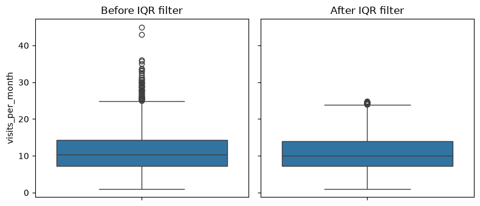

[3주차] 결측치·이상치 처리와 열 정리
비즈니스빅데이터분석
3주차
결측치·이상치 처리와 열 정리
2027학년도 「비즈니스빅데이터분석」의 준비 중인 교재입니다. 편집 상태를 검토하기 위해 미리 공개한 것으로, 수업 전에 내용과 순서가 바뀔 수 있습니다.
학사 4주차 · 교재 03 · 2부 데이터 전처리 · 출제 분야: 데이터 전처리 > 결측치/이상치 등 처리
AICE Associate의 데이터 전처리 문항은 앞 문항이 만든 데이터프레임을 받아 가이드가 지정한 처리를 하고, 그 결과를 다시 지정된 변수에 저장하게 한다. 이상치를 조건이나 사분위수 범위로 제거하고, 결측치가 있는 행을 삭제하거나 다른 값으로 대체하며, 필요 없는 열을 삭제하고 인덱스를 다시 매기는 일이 대표적이다. 한 문항의 결과가 다음 문항의 입력이 되므로, 한 단계에서 행 수가 어긋나면 그 뒤의 인코딩, 분할, 모델의 점수가 모두 달라진다.
본 장은 1장과 2장에서 찾은 품질 문제(중복 행, 결측치, 불가능한 값, 이상치, 식별자 열)를 처리하는 방법을 다룬다. 함수마다 인자의 뜻과 결과의 행 수를 확인하고, 처리 결과를 변수에 다시 저장하는 습관을 익힌다. 중심 실습에서 작성하는 정제본 df_clean(2940행 16열, 결측치 0)은 4장(인코딩)부터 10장까지 모든 장의 출발점이 된다.
학습 목표
- 열별·행별 결측치의 수를 집계하고,
dropna의subset,how,thresh인자로 삭제할 행을 정한다. - 수치형 열은 평균이나 중앙값으로, 범주형 열은 최빈값으로 결측치를 대체하고, 대체값의 선택 기준을 설명한다.
- 업무상 불가능한 값을 조건으로 제거하고, 결측치를 남길지를 조건에 반영한다.
- 사분위수 범위(IQR)로 이상치의 경계를 계산하여 경계 밖의 행을 제거한다.
- 열을 삭제하고,
drop_duplicates의subset과keep으로 중복 행을 삭제하며, 인덱스를 재설정한다. - 처리 결과를 변수에 다시 저장하고, 원본을
copy로 보존하며,inplace를 쓰지 않는 이유를 설명한다.
준비 사항
| 항목 | 내용 |
|---|---|
| 실습 노트북 | AICE_03주차_실습_학생용.ipynb |
| 자료 | customers.csv(학기 공통 자료의 원본), laptops.csv(시간 제한 문항용). 둘 다 assets/data/AICE_공통/에 있다 |
| 앞 장과의 연계 | 1장 3.8절의 품질 점검 표, 1장 4절의 조건에 의한 행 선택, 2장 4.2절의 상자그림과 사분위수 |
| 앞 과목과의 연계 | 「빅데이터 개론」 5장(결측값과 이상값의 개념), 「고급프로그래밍」 11~12장(표 데이터) |
| 실습 환경 | 접속과 설치는 부록 A를 따른다 |
이 장의 처리 순서는 1장 3.8절의 표를 따른다. 표에서 3장이 맡은 항목은 결측치, 범위를 벗어난 값, 중복 행, 식별자 열이다. 표기 불일치(region)와 문자열 열의 변환은 4장에서 처리한다.
1. 결측치의 집계와 결측 행의 삭제
1.1 열별, 행별 결측치의 수
import pandas as pd
DATA = "../kit/data/AICE_공통/"
df = pd.read_csv(DATA + "customers.csv")
df.shape(3030, 17)열별 결측치의 수는 1장에서 본 대로 isna().sum()으로 구한다. 결측치가 있는 열만 보려면 결과에서 0보다 큰 값만 고른다.
na = df.isna().sum()
na[na > 0]age 97
gender 40
visits_per_month 120
avg_session_min 61
annual_spend 12
dtype: int64sum()과 any()에 axis=1을 주면 열 방향이 아니라 행 방향으로 계산한다. isna().any(axis=1)은 결측치가 하나라도 있는 행에서 True이고, isna().sum(axis=1)은 행마다 결측치의 수이다.
print(df.isna().any(axis=1).sum())
print(df.isna().sum(axis=1).value_counts())319
0 2711
1 308
2 11
Name: count, dtype: int64결측치가 하나라도 있는 행은 319개이다. 결측치가 없는 행이 2,711개, 하나인 행이 308개, 둘인 행이 11개이다. 결측치가 여러 열에 흩어져 있으므로, 결측치가 있는 행을 모두 지우면 전체의 약 10%가 사라진다.
axis |
계산 방향 | isna().sum(axis=...)의 결과 |
|---|---|---|
0 (기본값) |
위에서 아래로, 열마다 | 열마다 결측치의 수 |
1 |
왼쪽에서 오른쪽으로, 행마다 | 행마다 결측치의 수 |
1.2 dropna와 주요 인자
dropna()는 결측치가 있는 행을 삭제한 새 데이터프레임을 돌려준다. 원본은 바뀌지 않는다.
| 인자 | 뜻 | 기본값 |
|---|---|---|
subset |
결측치를 검사할 열의 목록 | 모든 열 |
how |
"any": 검사한 열 가운데 하나라도 결측이면 삭제. "all": 모두 결측일 때만 삭제 |
"any" |
thresh |
결측이 아닌 값이 이 수 이상인 행만 남긴다. how와 함께 쓸 수 없다 |
없음 |
axis |
1이면 행 대신 결측치가 있는 열을 삭제한다 |
0 |
print(df.dropna().shape)
print(df.dropna(subset=["annual_spend"]).shape)
print(df.dropna(subset=["age", "gender"]).shape)
print(df.dropna(subset=["age", "gender"], how="all").shape)(2711, 17)
(3018, 17)
(2895, 17)
(3028, 17)인자를 주지 않으면 모든 열을 검사하므로 319행이 삭제되어 2,711행이 남는다. subset=["annual_spend"]는 연간 구매액이 결측인 12행만 삭제한다. age와 gender 가운데 하나라도 결측인 행을 지우면 2,895행이, 둘 다 결측인 행만 지우면 3,028행이 남는다. 둘 다 결측인 행은 2개뿐이다.
thresh는 남길 행의 기준을 “결측이 아닌 값의 수”로 정한다. 이 자료는 17열이므로 thresh=16은 결측치가 하나 이하인 행을 남긴다. 결측치가 둘인 11행이 삭제된다.
print(df.dropna(thresh=16).shape)(3019, 17)1.3 어떤 결측 행을 삭제하는가
결측 행의 삭제는 간단하지만 자료를 잃는다. 다음의 기준으로 판단한다.
| 상황 | 처리 | 이 자료의 예 |
|---|---|---|
| 목표 열이 결측이다 | 삭제한다. 대체하면 모델이 배울 정답을 지어내는 것이 된다 | annual_spend 12행 |
| 입력 열의 결측이 적고 흩어져 있다 | 대체한다(2절). 그 행의 다른 열의 정보를 살린다 | age, gender, visits_per_month, avg_session_min |
| 한 열의 대부분이 결측이다 | 그 열을 삭제하는 것을 검토한다 | 해당 없음 |
| 가이드가 삭제를 지시한다 | 지시대로 삭제한다 | 시험의 문항 |
시험에서는 가이드가 처리 방법을 지정하므로 판단할 여지가 적다. 다만 “결측치가 있는 행을 삭제한다”와 “열이 결측인 행을 삭제한다”는 subset의 유무가 다르고, 결과의 행 수도 다르다. 가이드의 문장에서 대상 열을 정확히 읽는다.
노트북 1부의 연습 1(행별 결측치의 수)과 연습 2(how)를 푼다.
2. 평균·중앙값·최빈값에 의한 대체
2.1 대체값의 선택
fillna(값)은 결측치를 주어진 값으로 채운 새 시리즈(또는 데이터프레임)를 돌려준다. 대체값은 열의 성격에 따라 고른다.
| 열 | 대체값 | 구하는 코드 |
|---|---|---|
| 수치형, 분포가 대칭에 가깝고 극단값이 없다 | 평균 | df["열"].mean() |
| 수치형, 분포가 치우쳤거나 극단값이 있다 | 중앙값 | df["열"].median() |
| 범주형(문자열) | 최빈값 | df["열"].mode()[0] |
mean()과 median()은 결측치를 빼고 계산한다(skipna=True가 기본값). 평균은 극단적인 값에 끌려가지만 중앙값은 그렇지 않다.
print(round(df["age"].mean(), 2))
print(df["age"].median())40.31
38.0age의 평균은 40.31세이고 중앙값은 38.0세이다. 999세 같은 입력 오류가 평균을 끌어올렸다. 이 때문에 이상치를 먼저 제거하고 대체값을 구하거나, 중앙값을 쓴다. 중심 실습은 이상치를 제거한 뒤에 중앙값으로 대체한다.
2.2 수치형 열의 대체
한 열을 대체한 결과는 그 열에 다시 저장한다. 아래 셀은 원본을 복사한 d에서 age를 대체하므로 원본 df의 결측치는 그대로 남는다.
d = df.copy()
d["age"] = d["age"].fillna(d["age"].median())
print(df["age"].isna().sum(), d["age"].isna().sum())97 0평균으로 대체하면 그 열의 평균은 바뀌지 않지만, 같은 값이 여러 개 들어가므로 표준편차는 작아진다. 결측치가 많은 열을 한 값으로 대체하면 분포가 그 값에 몰린다는 점을 기억한다(연습 3).
2.3 범주형 열의 대체와 mode()[0]
mode()는 최빈값을 하나의 값이 아니라 시리즈로 돌려준다. 가장 많은 값이 둘 이상일 수 있기 때문이다. 값 하나를 꺼내려면 [0]을 붙인다.
print(df["gender"].mode())
print(df["gender"].mode()[0])0 F
Name: gender, dtype: str
F[0]을 빠뜨리면 오류가 나지 않고 결과만 틀린다. fillna에 시리즈를 주면 같은 인덱스의 값끼리 맞추어 채우기 때문이다. 최빈값 시리즈의 인덱스는 0 하나뿐이므로, 0번 행이 결측일 때에만 그 행이 채워진다.
d = df.copy()
d["gender"] = d["gender"].fillna(d["gender"].mode())
print(d["gender"].isna().sum())40gender의 결측치 40개가 하나도 채워지지 않았다. 오류 정정 문항에서 자주 쓰이는 유형이다.
2.4 여러 열의 한 번 대체
데이터프레임의 fillna에 {열 이름: 대체값}의 사전을 주면 여러 열을 열마다 다른 값으로 한 번에 대체한다.
d = df.copy()
d = d.fillna({"visits_per_month": d["visits_per_month"].median(), "gender": d["gender"].mode()[0]})
d[["visits_per_month", "gender"]].isna().sum()visits_per_month 0
gender 0
dtype: int64노트북 1부의 연습 3(평균 대체 전후의 표준편차)과 연습 4(평균과 중앙값, [선택])를 푼다.
3. 조건에 의한 이상치 제거
3.1 업무상 불가능한 값
이상치는 두 종류로 나누어 다룬다. 하나는 업무상 있을 수 없는 값(나이 0세와 999세, 음수의 구매액)이고, 다른 하나는 가능하지만 다른 값들과 동떨어진 값이다. 앞의 것은 업무의 기준으로 정한 조건으로, 뒤의 것은 4절의 사분위수 범위로 제거한다.
print((df["age"] < 19).sum(), (df["age"] > 80).sum())
print(df.loc[(df["age"] < 19) | (df["age"] > 80), "age"].value_counts())
print((df["annual_spend"] <= 0).sum())4 6
age
999.0 6
0.0 4
Name: count, dtype: int64
519세 미만인 값이 4개, 80세 초과인 값이 6개이며, 모두 0과 999이다. 연간 구매액이 0 이하인 값은 5개이다. 본 교재는 회원의 나이를 19세 이상 80세 이하로 보고, 연간 구매액은 0보다 커야 한다고 정한다.
3.2 between과 결측치
Series.between(a, b)는 a <= 값 <= b이면 True이다. 경계값을 포함하는 것이 기본값(inclusive="both")이다. 결측치는 비교할 수 없으므로 False가 된다.
cond = df["age"].between(19, 80)
print(cond.sum(), (~cond).sum())
print(df["age"].isna().sum())2923 107
97조건이 False인 107행에는 불가능한 값 10개와 결측치 97개가 함께 들어 있다. 이 조건으로 행을 고르면 결측치가 있는 행까지 삭제된다. 결측치는 2절의 방법으로 대체할 것이므로 남겨야 한다면, 조건에 | df["age"].isna()를 더한다.
a = df[df["age"].between(19, 80)]
b = df[(df["age"].between(19, 80)) | (df["age"].isna())]
print(len(df), len(a), len(b))3030 2923 3020결측을 남기지 않은 a는 2,923행, 결측을 남긴 b는 3,020행이다. 두 결과의 차이 97은 age의 결측치 수와 같다. 가이드가 “범위 밖의 값을 제거한다”고만 하면 결측치를 남기는 것이 원칙이다. 결측치는 범위 밖의 값이 아니기 때문이다.
3.3 조건으로 고르기와 인덱스로 지우기
조건에 맞지 않는 행을 제거하는 방법은 두 가지이다. 3.2절처럼 남길 행의 조건으로 고르는 방법과, 지울 행의 인덱스를 구하여 drop(index=...)로 지우는 방법이다.
bad = df[df["annual_spend"] <= 0].index
d = df.drop(index=bad)
print(bad.tolist())
print(len(df), len(d))[87, 763, 925, 1422, 2842]
3030 3025두 방법의 결과는 같다. 조건으로 고르는 방법은 “무엇을 남기는가”를, drop은 “무엇을 지우는가”를 코드에 드러낸다. 가이드가 “~인 행을 삭제한다”고 하면 drop을, “~인 행만 남긴다”고 하면 조건 선택을 쓰면 읽기 쉽다. 어느 방법이든 처리 전후의 행 수를 출력하여 삭제된 수가 예상과 같은지 확인한다.
| 실수 | 결과 |
|---|---|
조건에 and, or를 쓴다 |
ValueError: The truth value of a Series is ambiguous (1장 4.3절) |
| 조건마다 괄호를 빠뜨린다 | &가 비교보다 먼저 계산되어 TypeError나 틀린 결과 |
df[df["annual_spend"] >= 0]로 쓴다 |
0인 값이 남는다. 가이드의 “0보다 큰”과 “0 이상”을 구분한다 |
노트북 1부의 연습 5(300분 이상의 제거)와 연습 6(두 조건의 결합)을 푼다.
4. 사분위수 범위에 의한 이상치 제거
4.1 경계의 계산
2장의 상자그림에서 수염 밖에 점으로 표시된 값은 다음 경계를 벗어난 값이다.
- 아래쪽 경계 = Q1 - 1.5 × IQR
- 위쪽 경계 = Q3 + 1.5 × IQR
- IQR = Q3 - Q1
quantile(q)는 0과 1 사이의 비율 q에 해당하는 분위수를 돌려준다. 제1사분위수는 quantile(0.25), 제3사분위수는 quantile(0.75)이다. 결측치는 빼고 계산한다.
q1 = df["visits_per_month"].quantile(0.25)
q3 = df["visits_per_month"].quantile(0.75)
iqr = q3 - q1
lower = q1 - 1.5 * iqr
upper = q3 + 1.5 * iqr
print(q1, q3, round(iqr, 2))
print(round(lower, 2), round(upper, 2))7.2 14.3 7.1
-3.45 24.95visits_per_month의 Q1은 7.2회, Q3은 14.3회, IQR은 7.1회이다. 아래쪽 경계는 -3.45, 위쪽 경계는 24.95이다. 방문 수는 음수가 될 수 없으므로 아래쪽 경계 밖의 값은 없다. 경계값을 출력할 때 round를 쓰는 것은 소수의 계산 오차로 끝자리가 길게 표시되는 것을 막기 위함이다. 비교에는 반올림하지 않은 값을 쓴다.
4.2 경계 밖의 행 제거
s = df["visits_per_month"]
print((s < lower).sum(), (s > upper).sum())
d = df[(s.between(lower, upper)) | (s.isna())]
print(len(df), len(d))0 63
3030 2967위쪽 경계를 넘는 63행이 제거되어 2,967행이 남는다. 3.2절과 마찬가지로 between은 결측치를 False로 판정하므로, 결측치를 남기려면 | s.isna()를 더한다. 경계값과 같은 값은 남는다(between의 기본값).
제거 전후의 상자그림을 나란히 그리면 처리의 효과를 확인할 수 있다. sharey=True는 두 칸의 y축 범위를 같게 맞춘다.
import matplotlib.pyplot as plt
import seaborn as sns
fig, axes = plt.subplots(1, 2, figsize=(8, 3.5), sharey=True)
sns.boxplot(data=df, y="visits_per_month", ax=axes[0])
sns.boxplot(data=d, y="visits_per_month", ax=axes[1])
axes[0].set_title("Before IQR filter")
axes[1].set_title("After IQR filter")
plt.tight_layout()
plt.show()
제거 후에도 상자그림에 점이 몇 개 보일 수 있다. 행을 지운 뒤의 자료로 사분위수를 다시 계산하면 경계가 조금 안쪽으로 옮겨지기 때문이다. IQR에 의한 제거는 가이드가 지시한 횟수(대개 한 번)만 적용한다.
quantile에 비율의 리스트를 주면 여러 분위수를 한 번에 구한다.
df["avg_session_min"].quantile([0.25, 0.5, 0.75])0.25 13.7
0.50 16.7
0.75 19.9
Name: avg_session_min, dtype: float644.3 경계는 그 시점의 자료로 정해진다
사분위수는 계산하는 시점의 자료에 따라 달라진다. 2장 4.2절에서 원본으로 계산한 avg_session_min의 경계는 4.4와 29.2였다. 중복 행과 불가능한 값을 먼저 제거한 뒤에 계산하면 Q1과 Q3이 달라져 경계도 달라진다. 그래서 IQR에 의한 제거는 가이드가 정한 순서에서 정확히 그 단계의 자료로 계산해야 한다. 중심 실습의 단계 5에서 이를 확인한다.
IQR에 의한 제거는 업무의 판단 없이 분포만으로 경계를 정한다. 따라서 실제로 가능한 값도 제거될 수 있다. 1.5 대신 3을 쓰면 극단적인 값만 제거된다(연습 8). 시험에서는 가이드가 배수와 대상 열을 지정한다.
노트북 1부의 연습 7(다른 열의 IQR)과 연습 8(3×IQR, [선택])을 푼다.
5. 열 삭제, 중복 행 삭제, 인덱스 재설정
5.1 열 삭제: drop(columns=...)
drop(columns=[열, ...])은 지정한 열을 뺀 새 데이터프레임을 돌려준다. customer_id 같은 식별자는 회원마다 값이 다르므로 모델이 배울 규칙이 없다. 1장 3.6절에서 고유값의 수로 식별자를 찾았다.
d = df.drop(columns=["customer_id"])
print(df.shape, d.shape)(3030, 17) (3030, 16)drop("customer_id", axis=1)로 써도 같다. axis=1을 빠뜨리면 pandas는 customer_id를 행의 인덱스에서 찾다가 KeyError를 낸다. columns=로 쓰면 방향을 혼동할 일이 없다. 없는 열 이름을 주어도 KeyError가 난다.
df.drop(columns=["customer"])KeyError: "['customer'] not found in axis"5.2 중복 행 삭제: drop_duplicates
drop_duplicates()는 1장의 duplicated()가 True로 표시한 행을 삭제한다.
| 인자 | 뜻 | 기본값 |
|---|---|---|
subset |
중복을 판단할 열의 목록 | 모든 열 |
keep |
"first": 처음 나온 행을 남긴다. "last": 마지막 행을 남긴다. False: 중복된 행을 모두 삭제한다 |
"first" |
print(df.drop_duplicates().shape)
print(df.drop_duplicates(subset=["customer_id"]).shape)
print(df.drop_duplicates(subset=["customer_id"], keep="last").shape)
print(df.drop_duplicates(keep=False).shape)(3000, 17)
(3000, 17)
(3000, 17)
(2970, 17)모든 열을 기준으로 하든 customer_id만을 기준으로 하든 3,000행이 남는다. 이 자료의 중복 30개는 행 전체가 통째로 두 번 기록된 것이기 때문이다(1장 3.7절). keep="last"도 남는 행의 수는 같고 남는 행의 위치만 다르다. keep=False는 원본까지 지우므로 60행이 삭제되어 2,970행이 남는다. 중복의 원본은 정상인 기록이므로 keep=False는 쓰지 않는다.
5.3 인덱스 재설정: reset_index(drop=True)
행을 삭제해도 남은 행의 인덱스는 원래 번호를 유지한다. 그래서 행을 지운 뒤의 인덱스는 중간이 비어 있고 마지막 번호가 행 수보다 크다.
d = df.drop_duplicates().dropna(subset=["annual_spend"])
print(d.index[-3:].tolist())
print(d.reset_index().columns[:2].tolist())
d = d.reset_index(drop=True)
print(d.index[-3:].tolist())[3027, 3028, 3029]
['index', 'customer_id']
[2985, 2986, 2987]중복과 결측 행을 지운 뒤 2,988행이 남았지만 마지막 인덱스는 3029이다. reset_index()는 인덱스를 0부터 다시 매기는데, 기본값(drop=False)에서는 이전 인덱스를 index라는 열로 데이터프레임에 넣는다. 이 열이 남으면 모델의 입력에 섞이므로 drop=True로 버린다. 재설정한 뒤의 마지막 인덱스는 2987이다.
인덱스가 비어 있으면 1장 5.5절의 loc과 iloc의 차이가 드러나고, 5장 이후에 다른 데이터프레임과 열을 이어 붙일 때 인덱스가 맞지 않는 문제가 생긴다. 행을 지우는 처리를 마치면 인덱스를 재설정한다.
노트북 1부의 연습 9(두 열의 삭제)와 연습 10(keep="last")을 푼다.
6. 원본의 보존과 결과의 변수 저장
6.1 처리 결과의 재할당
이 장에서 다룬 dropna, fillna, drop, drop_duplicates, reset_index는 모두 처리한 새 객체를 돌려줄 뿐 원래의 데이터프레임을 바꾸지 않는다. 결과를 변수에 저장하지 않으면 처리는 화면에만 나타나고 사라진다.
d = df.copy()
d.dropna(subset=["annual_spend"])
print(d.shape)
d = d.dropna(subset=["annual_spend"])
print(d.shape)(3030, 17)
(3018, 17)첫 줄의 d.dropna(...)는 결과를 저장하지 않았으므로 d는 3,030행 그대로이다. d = d.dropna(...)처럼 같은 이름에 다시 저장해야 반영된다. 이 실수는 오류가 나지 않고 값만 틀리게 하므로 찾기 어렵다. 처리한 뒤마다 shape를 출력하여 행 수가 바뀌었는지 확인한다.
6.2 원본의 보존: copy()
d = df는 데이터프레임을 복사하지 않는다. 같은 데이터프레임에 이름을 하나 더 붙일 뿐이다. 따라서 d의 열을 바꾸면 df도 바뀐다. 원본과 독립된 데이터프레임이 필요하면 df.copy()를 쓴다.
base = df.copy()
alias = base
alias["flag"] = 1
print(alias is base, "flag" in base.columns)
copied = base.copy()
copied["flag2"] = 1
print(copied is base, "flag2" in base.columns)True True
False Falsealias is base가 True이므로 두 이름은 같은 객체를 가리키고, alias에 더한 열이 base에도 생겼다. copied는 다른 객체이므로 copied에 더한 열은 base에 생기지 않는다. 시험의 가이드가 “원본을 유지하고 새 변수에 저장한다”고 하면 새 변수 = 원본.copy()로 시작한다. 앞 문항의 결과를 뒤 문항이 다시 쓸 수 있기 때문이다(1장 7.2절 규칙 4).
pandas 3.0부터는 Copy-on-Write가 기본 동작이다. 조건으로 고른 결과(df[조건])나 열 하나(df["열"])를 바꾸어도 원본에는 영향을 주지 않는다. 다만 d = df처럼 이름만 붙인 경우는 같은 객체이므로 위와 같이 원본이 바뀐다.
6.3 inplace를 쓰지 않는 이유
많은 메서드에 inplace=True 인자가 있다. 이 인자를 주면 새 객체를 돌려주는 대신 그 데이터프레임을 바꾸고 None을 돌려준다.
d = df.copy()
result = d.dropna(subset=["annual_spend"], inplace=True)
print(result)
print(d.shape)None
(3018, 17)본 교재는 inplace를 쓰지 않고 결과를 변수에 다시 저장한다. 이유는 세 가지이다.
첫째, 재할당과 섞어 쓰면 변수가 None이 된다. 아래 셀은 inplace=True의 반환값 None을 d에 저장하여 다음 줄에서 오류가 난다.
d = df.copy()
d = d.dropna(subset=["annual_spend"], inplace=True)
d.shapeAttributeError: 'NoneType' object has no attribute 'shape'둘째, 열 하나를 골라 inplace로 바꾸는 코드(df["열"].fillna(값, inplace=True))는 pandas 3.0부터 원본을 바꾸지 못한다. 고른 열이 원본과 분리된 객체이기 때문이다. 이전 판의 자료에 흔한 코드이므로 주의한다.
d = df.copy()
d["age"].fillna(d["age"].median(), inplace=True)
print(d["age"].isna().sum())97결측치 97개가 그대로이다. 실행할 때 연쇄 할당(chained assignment)으로는 원본이 바뀌지 않는다는 경고가 출력되지만 오류는 나지 않는다.
셋째, pandas 3.1.0(2026-10-22)은 dropna, drop_duplicates, reset_index 등 실제로는 제자리에서 동작하지 않는 메서드의 inplace 인자를 폐지 예정으로 정하였다. 이 판에서 inplace=True를 쓰면 경고(Pandas4Warning)가 출력되며, 이후의 판에서 인자가 삭제될 예정이다.
| 쓰는 방식 | 쓰지 않는 방식 |
|---|---|
df = df.dropna(subset=["annual_spend"]) |
df.dropna(subset=["annual_spend"], inplace=True) |
df["age"] = df["age"].fillna(df["age"].median()) |
df["age"].fillna(df["age"].median(), inplace=True) |
df_new = df.copy() 뒤에 df_new를 처리 |
df_new = df 뒤에 df_new를 처리 |
노트북 1부의 연습 11(원본의 보존)을 푼다.
7. 중심 실습: 정제본 df_clean의 작성
노트북 AICE_03주차_실습_학생용.ipynb의 2부에서 수행한다. 학기 공통 자료의 원본을 가이드의 순서대로 정제하여 정제본 df_clean을 작성하고, 단계마다 남은 행 수를 답 변수에 저장한다.
준비. 단계 1의 셀을 실행하여 자료를 df에 읽는다.
절차. 단계마다 결과를 df에 다시 저장한다.
| 단계 | 할 일 | 답을 담을 변수 |
|---|---|---|
| 1 | 자료 읽기 | df |
| 2 | 중복 행 삭제(모든 열 기준), customer_id 열 삭제 |
n_step1 |
| 3 | annual_spend가 결측인 행 삭제 |
n_step2 |
| 4 | age가 19~80인 행만 남기기(결측은 남긴다), annual_spend가 0보다 큰 행만 남기기 |
n_step3 |
| 5 | avg_session_min의 IQR 경계 계산(Q1 - 1.5×IQR, Q3 + 1.5×IQR), 경계 안의 행과 결측 행 남기기 |
lower, upper, n_step4 |
| 6 | age, visits_per_month, avg_session_min은 중앙값으로, gender는 최빈값으로 대체. 인덱스 재설정(drop=True) |
df_clean |
| 7 | 자가 채점 셀의 실행과 해석 두 문장 | (출력 통과, 주석) |
순서에는 이유가 있다. 중복 행을 먼저 지워야 같은 회원이 두 번 세어지지 않는다. 불가능한 값을 먼저 지워야 사분위수와 중앙값이 오류 값에 끌려가지 않는다. 결측치의 대체는 행의 삭제를 모두 마친 뒤에 해야 대체값이 최종 자료의 중앙값이 된다. 인덱스의 재설정은 맨 마지막에 한 번 한다.
완료 기준. 자가 채점 셀이 통과를 출력한다. 자가 채점 셀은 다음을 검사한다.
| 검사 항목 | 기준 값 |
|---|---|
단계별 행 수 (n_step1, n_step2, n_step3, n_step4) |
(3000, 2988, 2973, 2940) |
단계 5의 경계 (lower, upper)(소수 둘째 자리) |
(4.15, 29.35) |
df_clean의 크기와 결측치의 수 |
(2940, 16), 0 |
customer_id 열과 인덱스 |
열이 없고, 마지막 인덱스가 2939 |
값의 해석. 단계 7에서 다음 두 물음에 한 문장씩 답한다.
- 단계 5의 경계를 원본(단계 1의
df)에서 계산하면 값이 달라진다. 그 까닭은 무엇인가. annual_spend의 결측은 삭제하고age의 결측은 대체하였다. 두 처리를 달리한 까닭은 무엇인가.
제출물. 실행을 마친 노트북 파일. 자가 채점 셀의 통과와 단계 7의 두 문장이 있어야 한다.
8. 시간 제한 문항
제한 시간은 15분이다. 노트북의 3부에서 푼다.
가상의 중고 노트북 거래 자료 laptops.csv를 사용한다. 가격(price, 만 원)에는 999 이상으로 잘못 입력된 값이 있고, battery_health(배터리 성능, %)와 condition(외관 등급)에는 결측치가 있다. 공식 문서 사이트만 참고한다. 각 문항의 답은 한 셀에 작성한다. 아래 셀을 먼저 실행한다.
import pandas as pd
DATA = "../kit/data/AICE_공통/"
lap = pd.read_csv(DATA + "laptops.csv")
print(lap.shape)문항 1 (빈칸 채우기)
가격(price)의 사분위수 범위로 경계를 계산하고, 경계 안의 행만 남겨 lap_iqr에 저장한다. 빈칸 ___을 채운다.
q1 = lap["price"].___(0.25)
q3 = lap["price"].quantile(___)
iqr = ___
lower = q1 - 1.5 * iqr
upper = q3 + 1.5 * iqr
lap_iqr = lap[lap["price"].between(lower, upper)]
print(lower, upper, lap_iqr.shape)문항 2 (오류 정정)
아래 코드는 가격이 999 이상인 행을 제거하고, 이어서 battery_health가 결측인 행을 삭제한 뒤 남은 행 수를 ans_t2에 저장하려 한다. 코드는 실행되지만 처리 결과가 반영되지 않아 값이 틀리다. 코드를 정정한다.
lap2 = lap.copy()
lap2[lap2["price"] < 999]
lap2.dropna(subset=["battery_health"])
ans_t2 = len(lap2)
print(ans_t2)문항 3 (답 변수)
원본 lap을 복사한 lap3을 다음 순서로 처리한다. (1) 가격이 999 이상인 행을 제거한다. (2) battery_health의 결측치를 (1)의 결과에서 구한 중앙값으로 대체한다. (3) condition이 결측인 행을 삭제한다. (4) 인덱스를 0부터 다시 매긴다. 처리 후의 행 수를 ans_t3에, (2)에서 쓴 중앙값을 ans_t3b에 저장한다.
# 여기에 코드를 작성한다9. 정리
| 주제 | 기억할 것 |
|---|---|
| 결측치의 집계 | 열별 isna().sum(), 행별 isna().sum(axis=1), 결측 행의 수 isna().any(axis=1).sum() |
| 결측 행의 삭제 | dropna(subset=[열]). how="any"(기본값)와 "all", thresh는 남길 값의 수 |
| 대체 | 수치형은 mean()·median(), 범주형은 mode()[0]. 결과를 그 열에 다시 저장한다 |
| 조건에 의한 제거 | between(a, b)는 경계를 포함하고 결측을 False로 판정한다. 결측을 남기려면 | isna() |
| IQR | q1 = quantile(0.25), q3 = quantile(0.75), 경계 q1 - 1.5*iqr, q3 + 1.5*iqr. 그 단계의 자료로 계산한다 |
| 열과 중복 | drop(columns=[...]), drop_duplicates(subset=..., keep="first") |
| 인덱스 | 행을 지운 뒤 reset_index(drop=True) |
| 재할당과 복사 | df = df.처리(), 원본 보존은 df.copy(). inplace를 쓰지 않는다 |
| 처리 순서 | 중복 → 식별자 열 → 목표 열의 결측 → 불가능한 값 → IQR → 대체 → 인덱스 재설정 |
다음 장에서는 정제본의 범주형 열(region, grade, payment 등)의 표기를 정리하고, 라벨 인코딩과 원핫 인코딩으로 모든 열을 수치로 바꾼다.
참고 자료
확인일은 2026-11-13이다. 표시한 항목은 2026-11-14에 확인하였다.
- pandas, Working with missing data. https://pandas.pydata.org/docs/user_guide/missing_data.html
- pandas,
DataFrame.dropna. https://pandas.pydata.org/docs/reference/api/pandas.DataFrame.dropna.html - pandas,
DataFrame.fillna. https://pandas.pydata.org/docs/reference/api/pandas.DataFrame.fillna.html - pandas,
Series.mode(2026-11-14 확인). https://pandas.pydata.org/docs/reference/api/pandas.Series.mode.html - pandas, Indexing and selecting data. https://pandas.pydata.org/docs/user_guide/indexing.html
- pandas,
Series.between(2026-11-14 확인). https://pandas.pydata.org/docs/reference/api/pandas.Series.between.html - pandas,
DataFrame.quantile. https://pandas.pydata.org/docs/reference/api/pandas.DataFrame.quantile.html - pandas,
DataFrame.drop. https://pandas.pydata.org/docs/reference/api/pandas.DataFrame.drop.html - pandas,
DataFrame.drop_duplicates. https://pandas.pydata.org/docs/reference/api/pandas.DataFrame.drop_duplicates.html - pandas,
DataFrame.reset_index. https://pandas.pydata.org/docs/reference/api/pandas.DataFrame.reset_index.html - pandas,
DataFrame.copy(2026-11-14 확인). https://pandas.pydata.org/docs/reference/api/pandas.DataFrame.copy.html - pandas, Migration Guides: Copy-on-Write (2026-11-14 확인). https://pandas.pydata.org/docs/user_guide/migration.html
- pandas, What’s new in 3.1.0: Deprecated inplace keyword for various methods (2026-11-14 확인). https://pandas.pydata.org/docs/whatsnew/v3.1.0.html